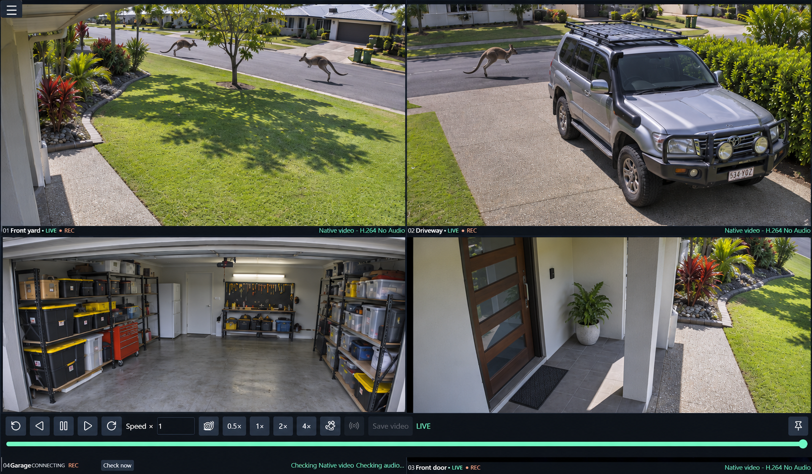

A layout that fits.
Resize dividers, swap camera positions, and go fullscreen. Layouts save in each browser for different screen sizes. There is no fixed camera-count limit; capacity depends on your host and cameras.
 plasticcheese
plasticcheese
Security Camera Viewer
Self-hosted · Windows & Linux
Bring your RTSP cameras and recorder channels together in a browser. Watch live, rewind a moment, or keep the footage that matters on your own server.
A local .NET web server. No browser plugins or cloud account needed for standard RTSP viewing.

01 / Live view & rewind
Use a responsive grid for the overview, then focus a camera when something catches your eye. Open the same server from another computer, tablet, or phone on your network.
Resize dividers, swap camera positions, and go fullscreen. Layouts save in each browser for different screen sizes. There is no fixed camera-count limit; capacity depends on your host and cameras.
Draw a zoom area, scroll or pinch to zoom, and drag to pan. Listen to supported camera audio and adjust brightness, shadows, noise reduction, and sharpening without changing recordings.
Enable a rolling memory buffer to pause, scrub, change speed, or scan backwards. Rewind the grid or a focused camera, save a selected interval, then return to live. History depends on your memory budget.
02 / Recording & detection
Choose a recording mode for each camera. Browse the archive by camera and date, jump to activity markers, download MP4 clips, and protect important footage from automatic cleanup.
Draw rectangular or polygon zones, exclude busy areas, and set weekly schedules. Reuse detection templates and assign recording or webhook actions to individual zones.
Use adaptive motion detection, local AI object detection, or a hybrid of both. AI models are installed separately; available classes and performance depend on the model and host.
Set retention by age and storage budget. Source video is saved without re-encoding, with available audio encoded as AAC. Playback support depends on the camera codec and browser.
03 / Connections
04 / Run it on your network
Install the web server on a Windows or Linux x64 host and open the viewer from a browser. Packages include the .NET runtime and MediaMTX. The server also requires FFmpeg. Each download has a SHA-256 checksum on GitHub.
Run the setup wizard to install the server and configure it as a Windows service. The wizard can install FFmpeg through Windows Package Manager. A portable ZIP is also available.
Use the DEB on Ubuntu 24.04 or Linux Mint 22, or the RPM on Fedora 43. After installing, run sudo security-camera-viewer-setup configure --start to start the service. A portable tar.gz is also available.
On the server, open http://localhost:5080/. On another device, use the server's LAN address on port 5080.
Open the menu and choose Cameras & configurations. Add cameras, select streams, save a configuration, and connect.
Arrange the grid, enable rewind if wanted, and configure recording, storage limits, zones, and schedules for each camera.
05 / Before you connect
Cameras must expose an accessible RTSP stream; ONVIF discovery is optional. Automatic playback can select native video, browser software decoding, or server JPEG previews. Codec support and host resources determine which methods are available. H.264 offers broad compatibility; live rewind also needs browser H.264/AAC media support.
Only cameras that publish RTSP while awake are supported. Enable the camera's NAS/RTSP feature and choose Motion-activated / battery camera in setup. Polling checks for available video; it does not wake a sleeping camera. A cloud-only camera is not made compatible by this setting.
The default setup is intended for a trusted LAN. Enable browser sign-in and scoped API tokens through Integrations & API. Use HTTPS with a certificate trusted by the device for microphone access and supported browser app installation. Compatible Android browsers can install the viewer as an app; the server must stay running and reachable.
Local AI detection requires a separately installed model. MediaMTX is included in the server packages and supports optional RTSP and ONVIF sharing.